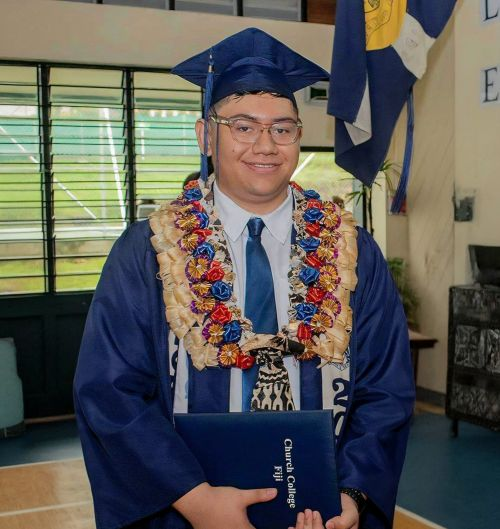
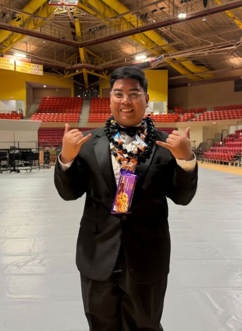
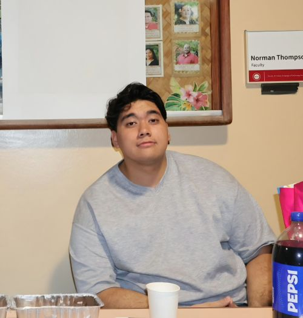
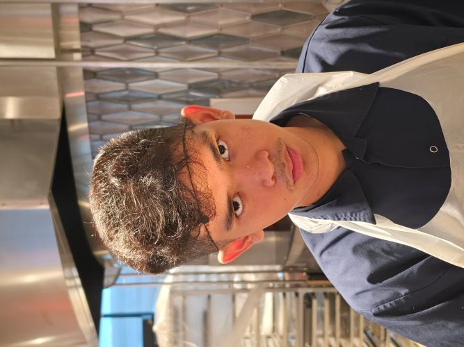

Robert
Robert is a friend I met when I was in 6th grade. We hated each other at first, but eventually, we became best friends. He made life more fun during college, and he was someone I could always turn to whenever I needed help with something.

Samuel
Sam is someone who always looks at life in a positive way. He never focuses on the negative side of things. He always stays positive, and I know that whenever I feel down or find myself in a dark place, he will help me see the positive side of things. He was also one of the friends who made my college experience more meaningful and enjoyable.
Niel
Niel is someone I met at BYU-Hawaii. Our friendship was unexpected and came out of nowhere. We have different upbringings, but we share similar life experiences. That is one of the reasons why we get along so well. My experience at BYU-Hawaii has been wonderful because of him. If it weren't for him, I wouldn't know where I would be today.

Redd
Redd is someone I also met at BYU-Hawaii who made my college experience more memorable. We started off as classmates, but we quickly became good friends. Our friendship began when I told him that he had a beautiful voice and that I admired him for it. Ever since that day, we haven't stopped expressing how much we love and appreciate each other.

Ted
Teddy is someone I also met at BYU-Hawaii. We never had any classes together, but we worked at the same place. He is the kind of person everyone enjoys being around. Teddy is always positive, and without him, the workplace would have been so boring. Honestly, I probably would have left a long time ago if it weren't for him. He made work more enjoyable and gave me another reason to look forward to each day.

Caleb
Caleb is someone I also met at BYU-Hawaii. I know, I'm surprised too! He is always funny and knows how to put a smile on everyone's face. Caleb is someone I can always turn to whenever I want to laugh or have a good time. I always look forward to seeing him because he brings so much joy and laughter wherever he goes. He is one of those people everyone loves to be around.